强数值底座后的 FNO 值得继续
v3a 的 ridge-FNO 相对锁定 ridge 在 K=4/6/8 平均改善 21.54% / 19.68% / 16.91%，三个开发门槛均通过。
把师兄建议的两条线真正合成可证伪研究。v2d 已否定当前 query-null checkpoint；v3a 进一步证明弱 FBP lift 上堆网络无效，而 ridge-initialized residual FNO 在 K=4/6/8 均通过开发门槛。创新重心现在锁定 ridge-FNO warm-start NeRIF、独立 nonlinear/cone-ray forward 与真实 geometry 验证。
面向少视角背景纹影层析的强数值底座残差神经算子与 NeRIF 物理精化。
本科保底成果是完整的 BOST inverse-operator pipeline、强传统重建基线、严格 OOD/风险审计和可交互三维展示；论文升级点是 ridge/CGLS 后的小残差算子、NeRIF 总优化时间与失败率收益，以及独立 forward 和真实跨工况验证。
v3a 的 ridge-FNO 相对锁定 ridge 在 K=4/6/8 平均改善 21.54% / 19.68% / 16.91%，三个开发门槛均通过。
FBP-lift residual FNO 三预算均为负收益；family/joint OOD 仍是 ridge-FNO 的最弱域，不能把模型名字当作贡献。
下一步必须同网络、同 K、同 optimizer、同 stop rule 比较 random/ridge/ridge-FNO/oracle 初始化的总时间、最终质量和失败率。
同总相机预算、固定 Q_fit/Q_audit 与 non-learning update 已在 v2d 补齐并否定旧 checkpoint。v3a 又补 training-mask-matched direct baselines，但仍缺 CGLS/TV/RBF/GRU-BOST、独立 cone-ray/nonlinear forward、新锁定 fields、NeRIF 总时间和真实数据。因此当前只做 warm-start 可行性，不把 synthetic 3/3 写成投稿算法。
M3B 跨形态 selector之后又完成六几何 nested-LOGO：1,728 observation cells 中，无 held-out selector mean/p95 regret 为 0.273%/1.196%。morphology/dynamics/noise 比 geometry 更主导失败；combined UQ 失效，prediction std 可筛风险但 full-rank fallback 会恶化系统风险。它约束 T16 必须分别验证 UQ、拒答和 fallback。
独立双专家 v2a 让平均 branch disagreement 从约 0.119 提高到 0.190；truth-oracle null audit 显示 support-fit 的剩余误差中平均 59.459% 能量位于 nullspace，理论 field headroom 为 38.626%。但 13,105 参数 learned null corrector 没有兑现这份上界，其 field-truth 最优 alpha 也只到 +1.212%。v2c 只证明候选 query 对这个弱方向有轻微约束作用。
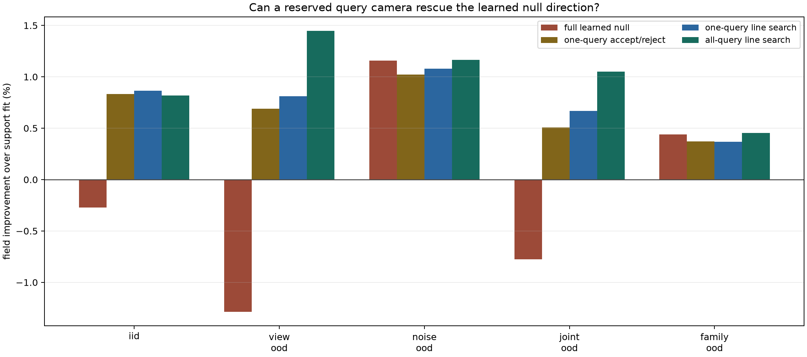
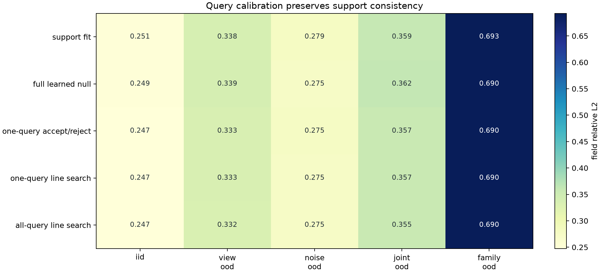
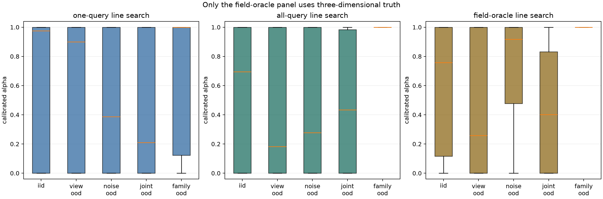
3 seeds × 5 domains 的 15 个汇总均值不是 15 个独立数据集；底层是 88 个独立测试体场与 3 个模型种子。当前还按样本从多个未用角中选视角，且 query 拟合与 held-out 验收没有完全分离。所以下一轮先做同总相机预算、固定 query 和独立 Q_audit，不再调大模型。
六个模型只改变输出参数化、gate 或可观测质量输入，主干、数据和训练预算保持一致。固定 view gate 把三视角的 lift 权重降到 0.6，却使 view/joint OOD 更差；metadata gate 的五域 field oracle regret 只从 3.10% 变为 3.08%，held-out regret反而从 1.65% 升到 2.00%。
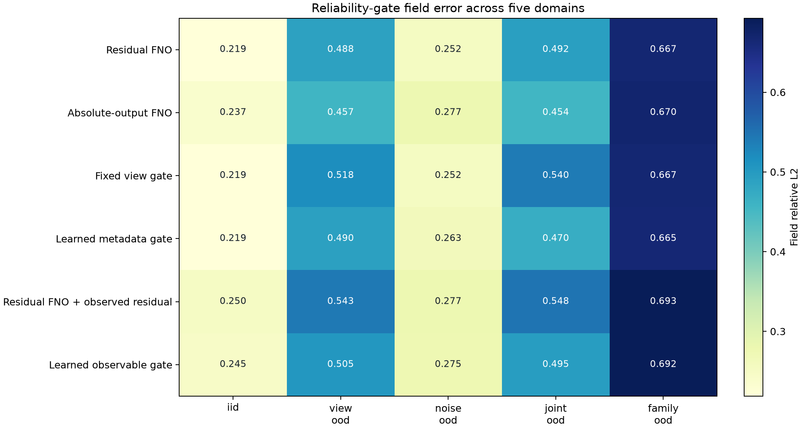
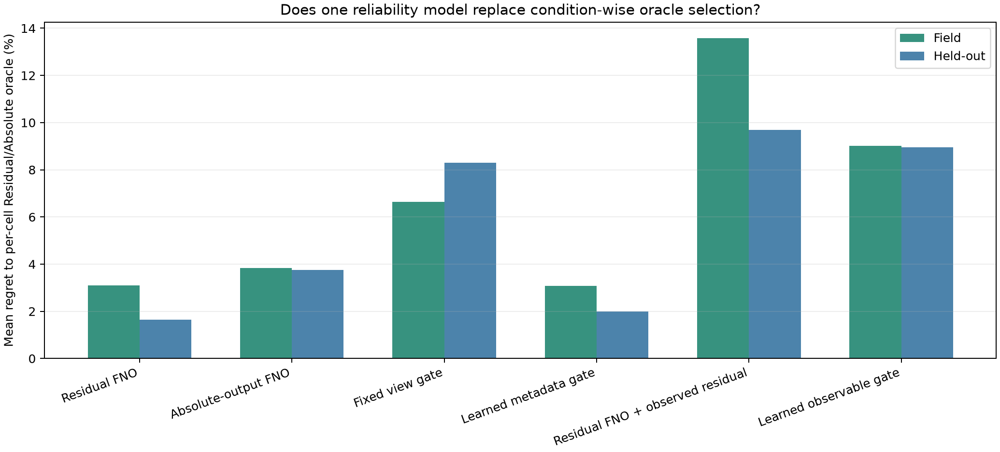
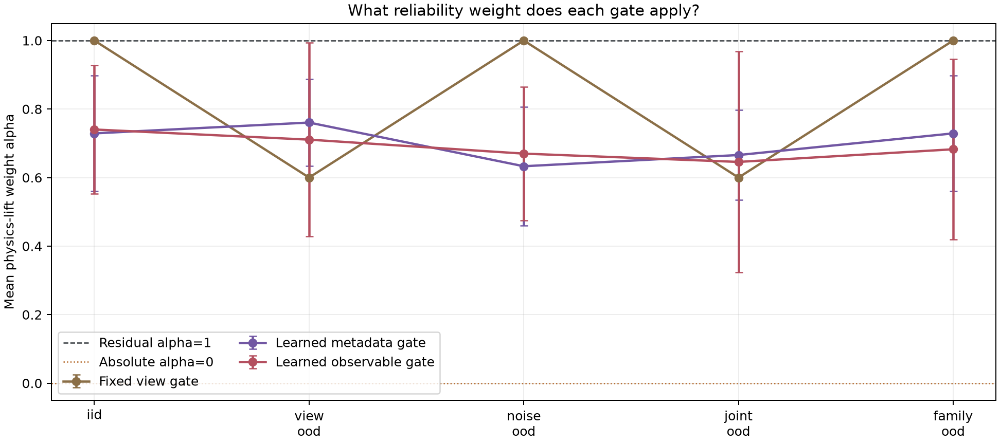
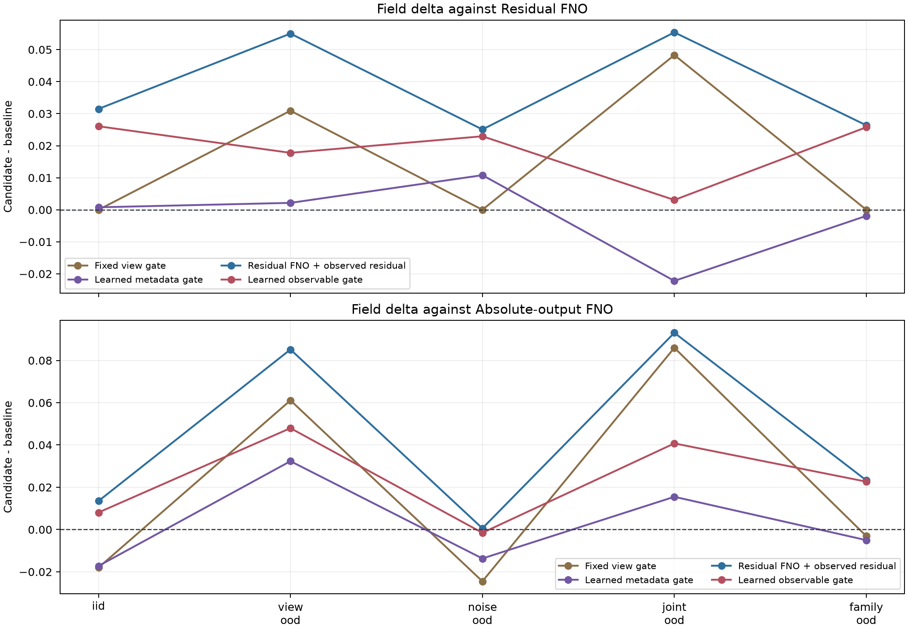
physics-lift observed reprojection residual 在 IID 约 0.398、view/joint OOD 约 0.846/0.850，诊断性很强；但把单个标量复制成整个 3D 通道会增大种子波动。它更适合进入低维 router，而不是污染每个 voxel 的 FNO 输入。
若 query-trained 双分支在 matched parameter budget 下仍不优于最佳单分支，就停止继续堆 gate；项目转向 geometry/位移质量诊断或 operator warm-start NeRIF，仍能形成完整毕业设计。
64 个基础训练样本被固定扩展为 128 个 support/query 视角变体；三个优化种子各训练一个 43,485 参数的双输出 FNO。它不是完整 MoE：两个 head 几乎共享全部主干，所以这一轮的目标是检查互补与路由信号，不是刷高精度。
| 推理路径 | IID field | view field | noise field | joint field | family field | field regret |
|---|---|---|---|---|---|---|
| Residual head | 0.2629 | 0.3451 | 0.2986 | 0.3808 | 0.6955 | 端点 |
| Absolute head | 0.2612 | 0.3395 | 0.2971 | 0.3838 | 0.6892 | 端点 |
| 0.5 等权融合 | 0.2577 | 0.3382 | 0.2934 | 0.3767 | 0.6908 | 0.197% |
| support-fit 闭式融合 | 0.2571 | 0.3380 | 0.2921 | 0.3766 | 0.6888 | 0.014% |
| query-trained router | 0.2578 | 0.3382 | 0.2937 | 0.3768 | 0.6909 | 0.233% |
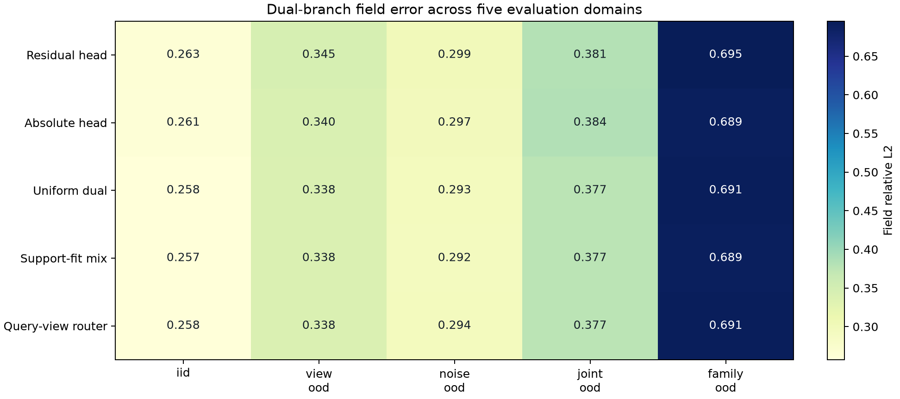
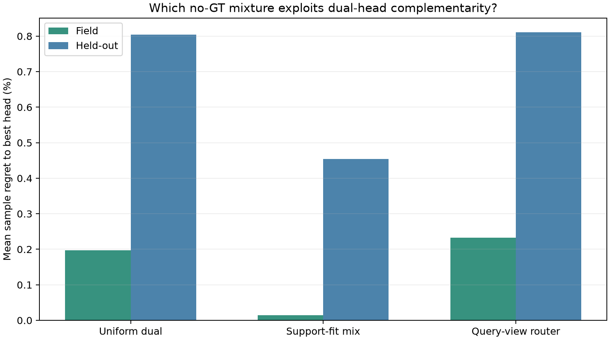
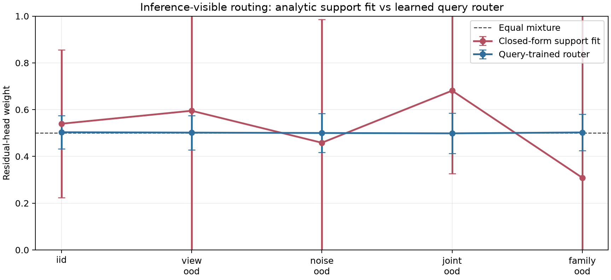
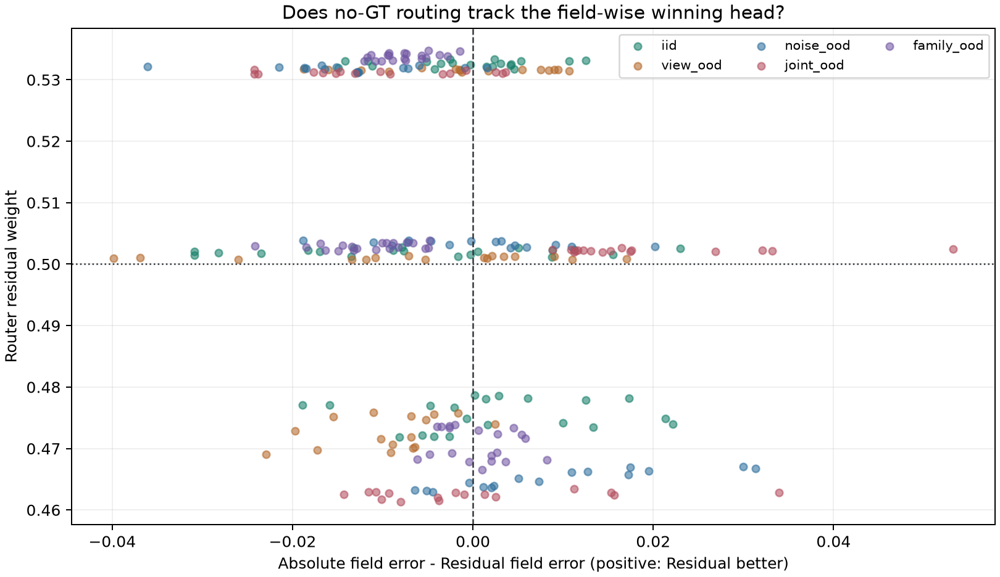
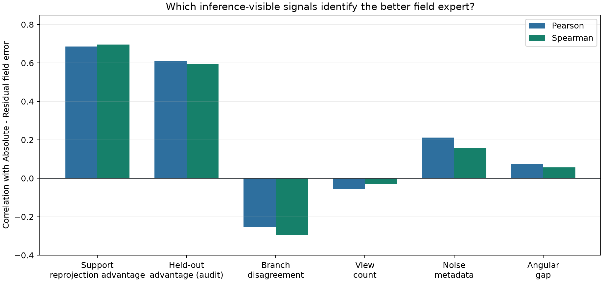
只用已输入的 support 观测和 forward operator，不读取 field truth 或额外相机。
三种子末期 query target 标准差只有约 0.08--0.09，两 head 的 query error gap 约 0.012--0.017，而且两输出几乎共享全部参数。这使“从零学权重”变成了弱可识别任务。
SC-DBNO（暂名）：先训练独立/低共享 Residual 与 Absolute 专家；用 `w_S` 作为物理锚点；网络只学受限幅 `delta_w` 或 `A_S(delta_x) ≈ 0` 的零空间体场残差。`||d||^2` 是路由可识别度，小时应拒答或转 NeRIF，不强行输出假精确权重。
当前工作名 QC-SNCO：Query-Calibrated Support-Null Correction Operator。这只是方便实验沟通的暂名，不代表已核验原创性。Residual/Absolute 独立专家与 support-fit 负责可观测解；hard projector 限制修正方向；query camera 不再训练自由 router，而是闭式标定不可观测修正幅度。
先在同总相机数下比较 S∪Q 直接重建与 S+Q correction；否则 +0.746% 只能说“多一个测量有用”。
固定/随机/adaptive 选角、query 数量、噪声和同步误差分开报告，并用独立 Q_audit 验收。
一次前向提供 population prior，再用真实 forward physics 少量精化；只比较总 wall time、最终 residual 和失败率，不能只报迭代数。
每篇都回答一个具体设计问题。`核心` 表示定题前必须读；`对照` 表示论文实验中应出现；`启发` 表示只有对应失败发生后才值得实现；`前沿` 表示跟踪而不承诺复现。
| 实验 | 必须比较 | 主指标 | 支持什么 | 失败时怎么收缩 |
|---|---|---|---|---|
| 双 expert 是否必要 | 共享/独立 Residual + Absolute、uniform、support-fit、等容量 ensemble | 五域 field、held-out、oracle regret、expert gap | 收益来自真实专家互补，而非容量变大 | 保留 support-fit 与最佳单分支 |
| 学习修正是否超过物理锚点 | support-fit / full null / one-query binary / one-query line search / all-query | field/held-out、support leakage、alpha、value of information | 验证相机补充了 support 不可观测信息 | 真实几何不能稳定超过 support-fit 就降级 |
| geometry-aware lift | channel stack / scalar lift / feature backprojection / GINO | view-layout 与 calibration OOD | 几何编码而非黑箱纹理带来泛化 | 固定几何版本作为毕业设计 |
| thin-front 高频 | FNO / CNO / wavelet或Riesz，容量匹配 | gradient、front location/thickness、spectrum | 局部分支针对已知失败域 | 扩大流态数据，不继续加架构 |
| NeRIF warm-start | random / physics lift / operator init | 总耗时、最终投影误差、失败率 | population prior 帮助逐实例精化 | 只保留快速 operator，不声称加速 NeRIF |
| 真实数据可信度 | 传统 BOST / NeRIF / operator / operator+refine | held-out camera、边界、跨批次稳定 | 方法离开 synthetic 仍可解释观测 | 论文定位为 synthetic closure + real case study |
仅“FNO 首次用于 BOST”通常不够。更可信的贡献组合是：可靠性翻转的系统发现 + support-consistent 闭式路由与零空间学习的可证伪分解 + 真实/近真实跨工况验证 + matched operator/CNN/NeRIF/传统反演完整对照 + 可复现代码与失败图。
数据生成、physics lift、FNO/CNN/NeRIF baseline、OOD/消融、切片/等值面/重投影交互展示。
anchored/nullspace 版跨种子、跨工况稳定超过 support-fit，并对真实数据失败有校准的预测能力。
变化几何、跨流态、真实多批次、UQ 校准、NeRIF 加速、开源复现中至少三项形成共同结论。